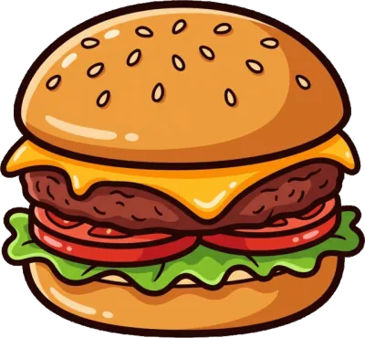
Ten dishes, not fifty
Ranking all fifty is what makes the top of the deck good. Offering all fifty turns a suggestion into a catalogue, and nobody swipes to dish forty.
an AI cooking partner, on the App Store
PantryPal answers one question: what can I cook with what I already have? Scan a receipt or the fridge and it stocks a shelf. Then, instead of a menu, dinner is already on the screen: one dish, ranked against that shelf.
I took it from sketches to the App Store: the wireframes, the Figma prototype, and then the real thing, a SwiftUI app with its own design system and the AI service behind it.
good food, wasted, and recipes that never start from your shelf
thrown away, uneaten
30–40%
recipes without a kitchen
millions
built for
which raises the question
How might dinner start from what’s already on the shelf?
not a video: the app’s own ranking, over its own fifty-dish book
Your shelf
13 on the shelf. The chef’s pick is Cheddar Cheeseburger: every ingredient on your shelf.
three ways to hold a shelf
Before a single pixel, three structures on graph paper. Two were set aside. The third settled the one thing that lasted: a single shelf, sorted by food type.
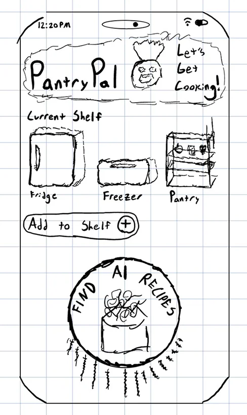
buckets
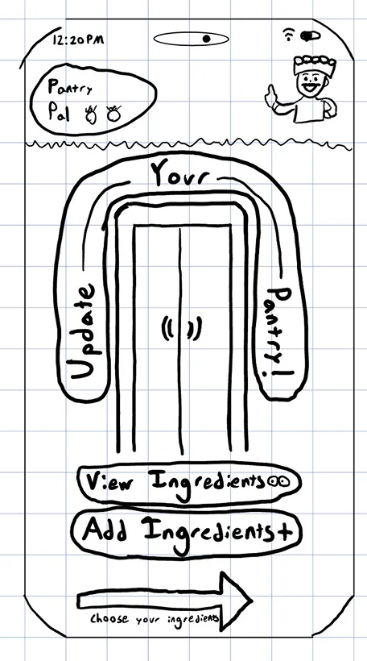
the portal
one shelf
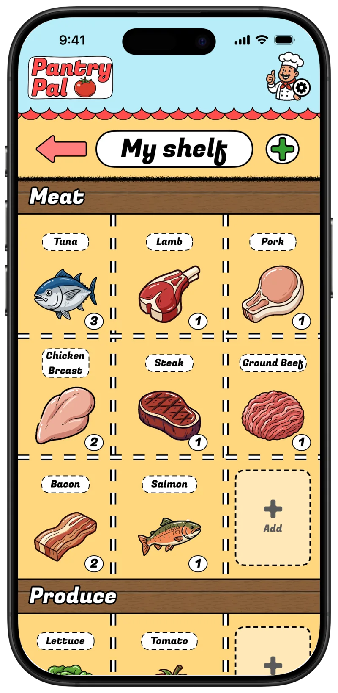
almost everything around it changed on the way to the App Store; the grid by food type never did
six screens in Figma
In Figma the app found its sticker-and-ink world: a butter-yellow kitchen, a chef, food drawn like stickers. The flow was the familiar one: pick ingredients into a basket, check out, choose from a list, then cook.
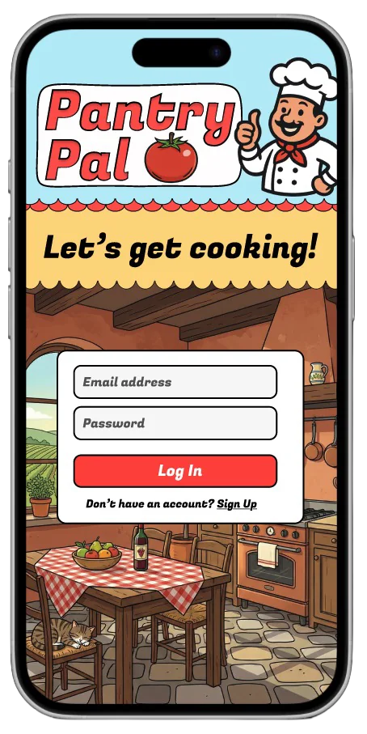
1log in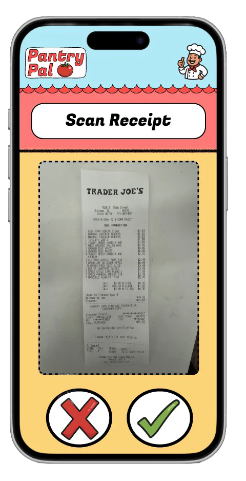
3scan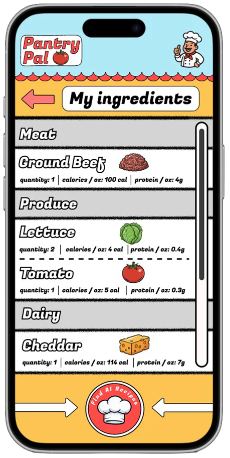
4check out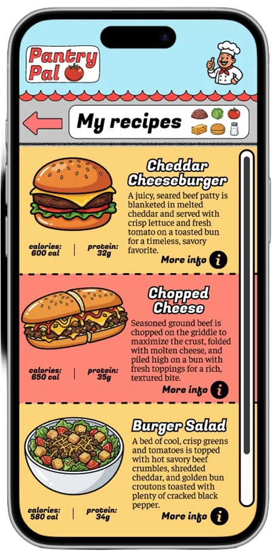
5choose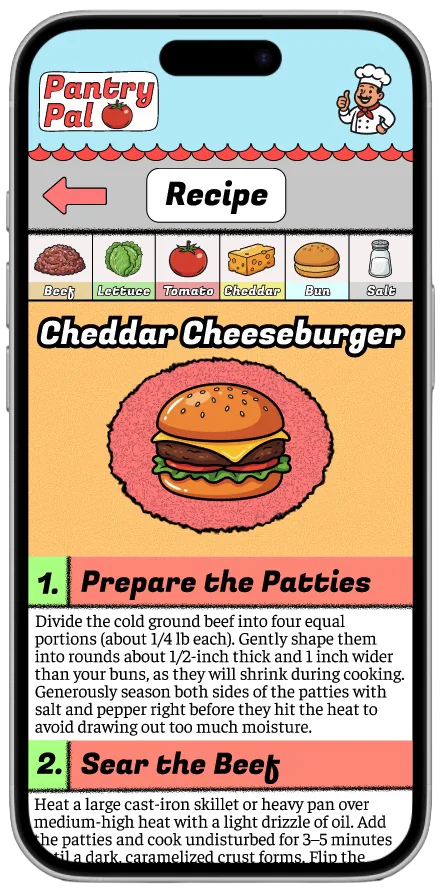
6cooka warm kitchen, and two faces for two jobs
Invitingly vibrant. A warm palette makes opening the app feel like a treat, something you want in your routine rather than one more chore. Two faces, two jobs: a bold, slanted display face for everything you tap, and a bookish serif kept for the recipes you read.
display · every label, button and title
Fugaz One
prose · only the words you read at the stove
Faustina
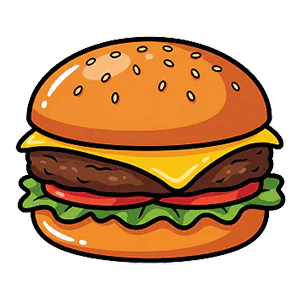
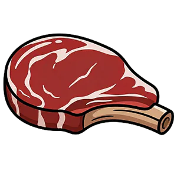
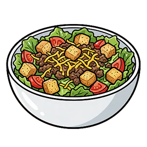
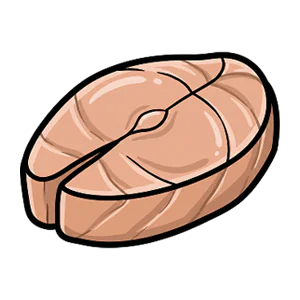
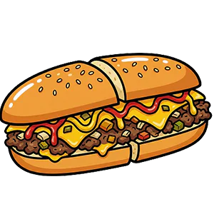
“Simple is better: every step should make the next action obvious.”
the Figma file becomes a phone
Then I built it for real, in SwiftUI, with Claude Code as a pair. The design system came first, lifted out of Figma into tokens and components, so every screen after it was built from the same parts, and checked against its Figma frame.
how it looks
one source of truthhow it thinks
no keys in the appone style, written down, for every food the app will ever meet
A written style contract turns any food into one of the app’s stickers. Five style tests were judged against the Figma art before the first batch; then the fifty most-used foods were drawn in one run.
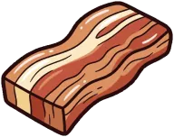
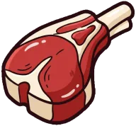
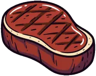
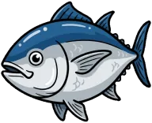
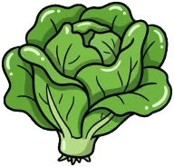
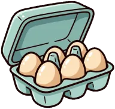
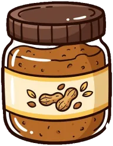
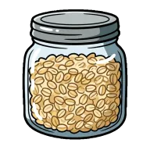
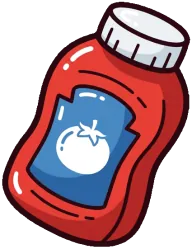
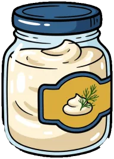
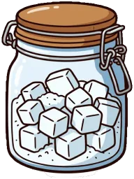
fourteen pots on one stove
Living with the real app showed what the prototype had hidden: its first screen was a control panel. Before anything delicious happened, it asked you to weigh fourteen things.
the hub, counted
14things to weigh before dinner: six foods, six tabs and two buttons, all shouting at once
1Fourteen pots on one stoveEvery added option slows the decision, and when everything shouts, it reads as overwhelming, not full of features.
2Two different “+” jobsOne plus meant I own this; another meant cook with this tonight. Same symbol, two mental models.
3The magic hides three taps deepThe recipes were the whole show, and they sat behind a basket, a review and a confirm.
four working prototypes, every tap counted
So I built four ways out as working prototypes, each running the same shelf to the same dinner, and counted every tap. Read the dots across: fewer is better.
One Red Button
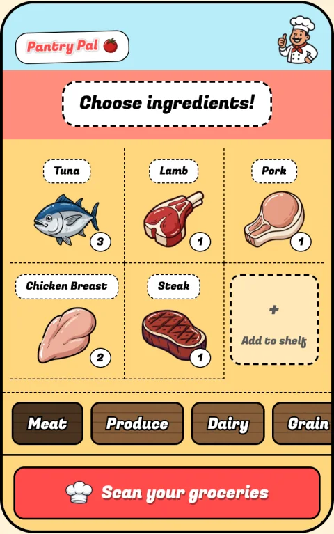
Chef’s Pick
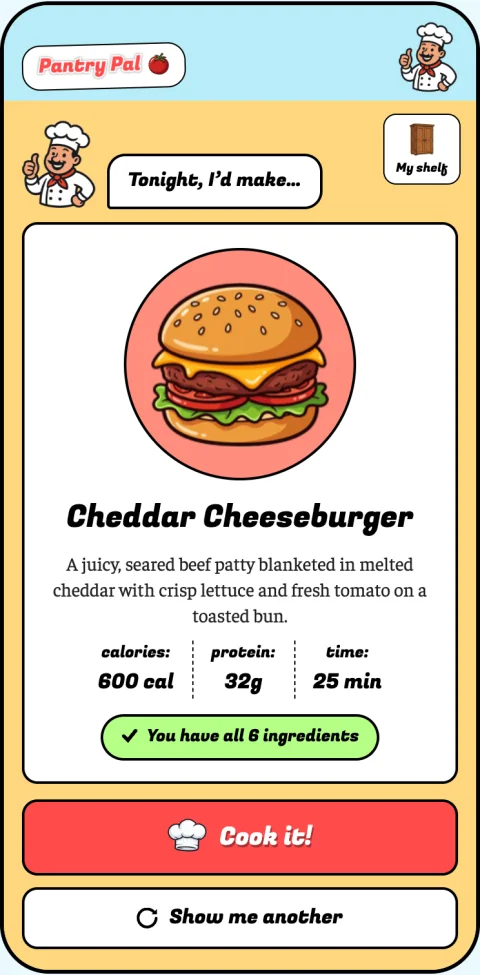
One Question
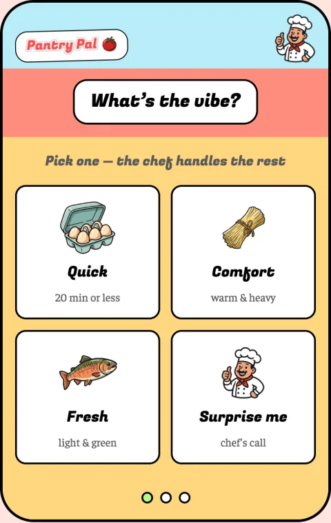
Card is the Button
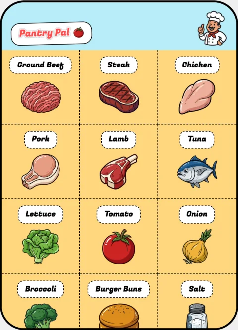
taps counted on each working prototype from opening the app to the recipe, on buttons only: picking food costs the same in every route, so it is left out
“Journey 2 wins the average Tuesday — nothing else gets close to open → cooking in one tap with zero waits.”
the test kitchen’s verdict on Chef’s Pick, August 2026
So the app flipped its premise. It opens on an answer, not a menu, and the shelf became a side door: always there, never required.
six orders up, from living with it

Ten dishes, not fifty
Ranking all fifty is what makes the top of the deck good. Offering all fifty turns a suggestion into a catalogue, and nobody swipes to dish forty.
Salt is already in the kitchen
Seven of the first ten dishes listed salt or oil, so the chef kept sending people shopping for seasoning. The basics now sit outside the score.
A chef is just a name
The email and password guarded nothing the phone’s own lock didn’t. Now one name opens the kitchen, and the profile never leaves the phone.
Throw it either way
The dish card only answered sideways, so a flick up felt stuck. Now it moves whichever way you push it, and snaps back to the top pick whenever the shelf changes.
Say what the button does
“Cook it!” read as final, when the tap only opens the steps: it says Start cooking now. A refresh icon promised new dishes that never came, so Show me another became Next dish.
Pay for a drawing once
Drawings are the app’s real running cost. Every render is kept and harvested back into the app, so each food is drawn once, ever, and then works offline.
on the App Store
The app that shipped runs six screens from the front door to a plate. The prototype’s basket and checkout are still there, folded into the shelf’s drawer, for the evenings you’d rather choose yourself.
front door to plate
 1jointhen: log in
1jointhen: log in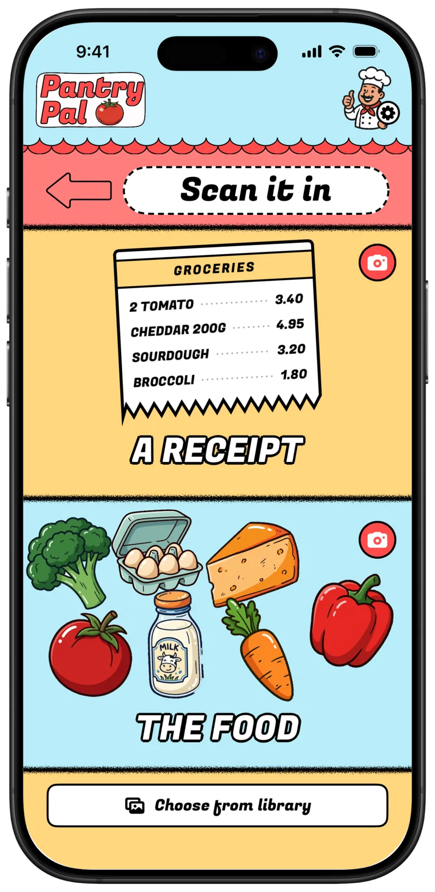
2scanthen: pick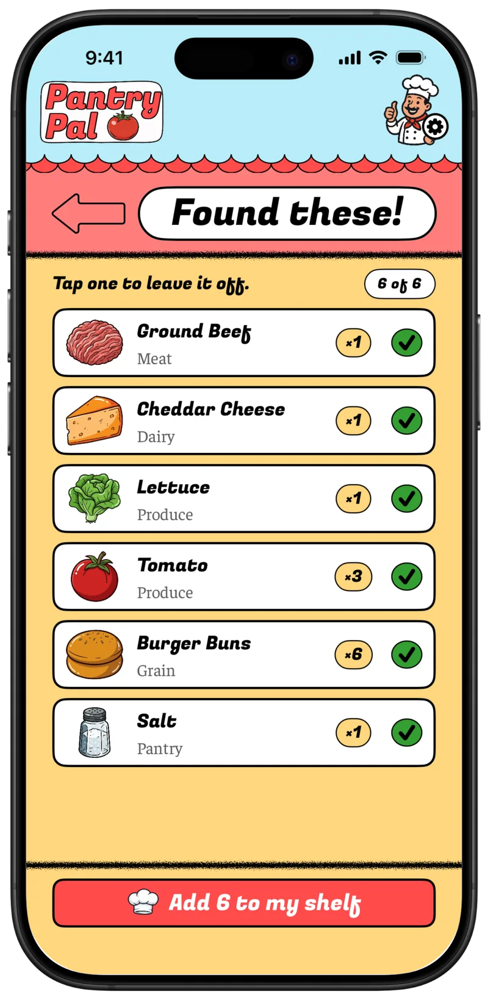
3checkthen: scan 5dinnerthen: choose
5dinnerthen: choosefrom the smallest to the largest, and the biggest text
Shipping also meant holding its shape on any iPhone. Every screen is shot from the smallest iPhone to the largest, and again at the biggest text size, and a layout test fails if a single button leaves the screen.
tools / ui-sweep
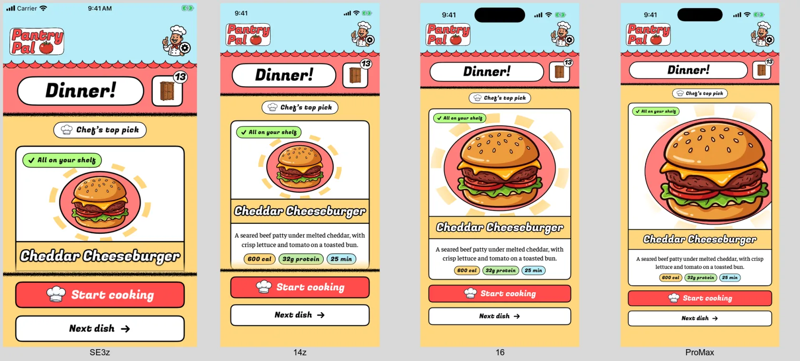
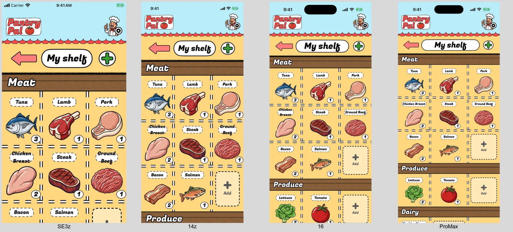
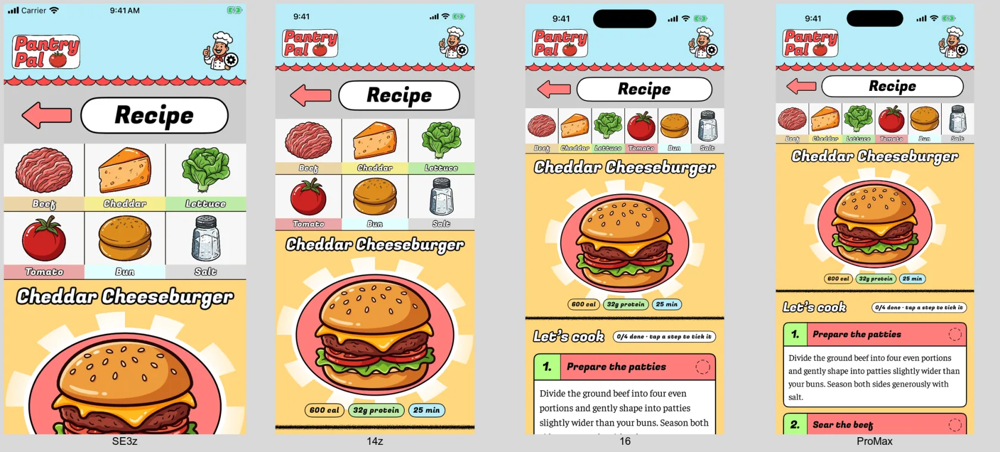
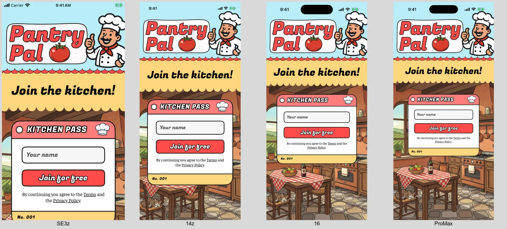
drawn like the app, one headline a panel
And the store page is drawn like the app. Five panels, one headline each, opening on a kitchen docket instead of a phone.
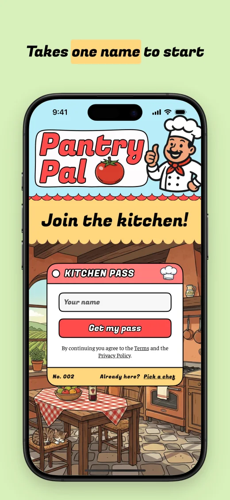
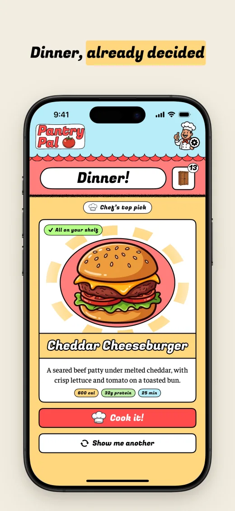
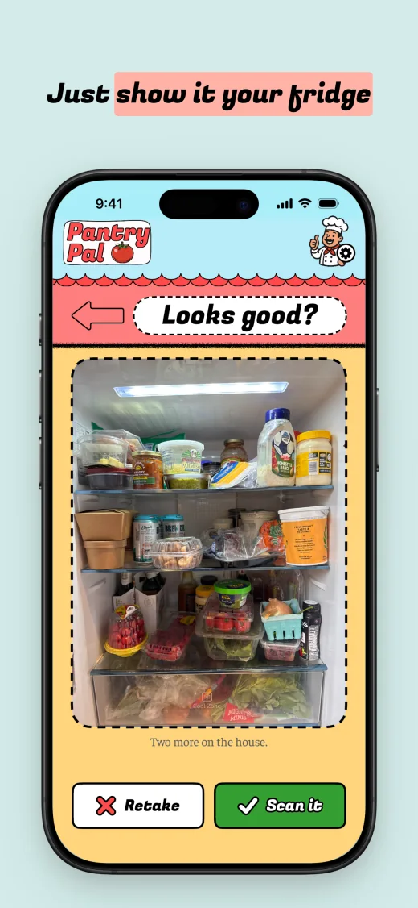
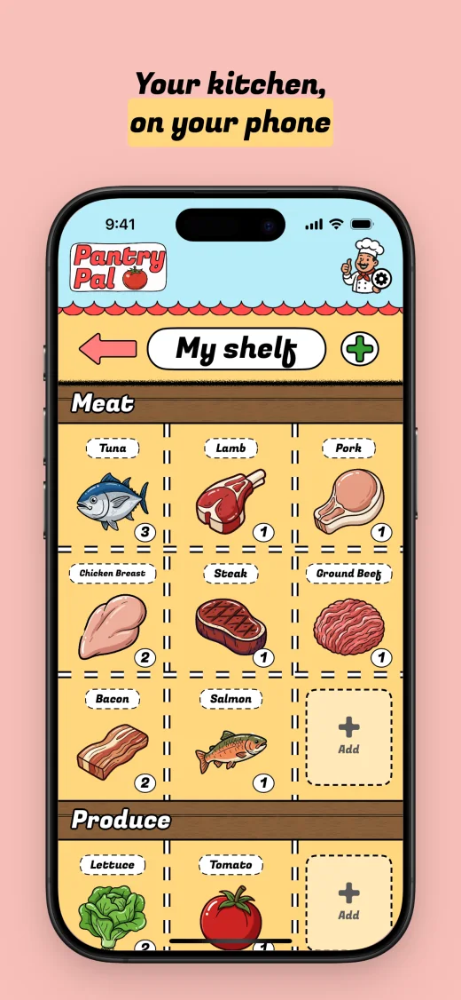
what shipped, and what I learned